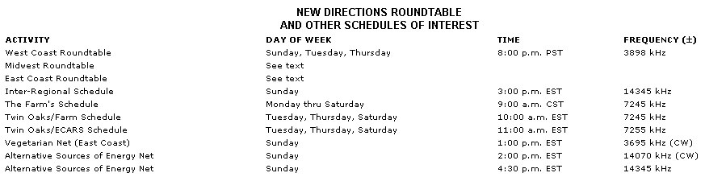

New Directions Radio
British ham television operators build complete stations by forming clubs.
By Copthorne Macdonald
November/December 1976
Copthorne Macdonald is the inventor of slow-scan television . . . a method of amateur radio transmission that allows ham operators to both hear and see each other during shortwave broadcasts.
ALONE . . . OR TOGETHER?
Rugged individualism. It's a great old American tradition, and a way of life that many of us-consciously or-unconsciously-have adopted. Yet, for all the virtues of self-reliance, there's a limit to what individuals acting alone can do.
Let me give you an example of what I mean. Back in the late '50's, broadcast television had been going strong on both sides of the Atlantic for about ten years. However, there'd been-in the U.S., at least-almost no amateur TV activity. The reason: A television station is quite complex and expensive to build, even on an amateur level . . . and those of us who were intrigued by the idea of ham TV simply couldn't see any way to get over the money hurdle.
Imagine my surprise, then, when I learned that members of the British Amateur Television Club had been building TV cameras, sync generators, and complete TV stations all along! By the late '50's, to be more specific, these folks had put together a number of very sophisticated ham stations, and two-way video communication between amateurs was taking place all over the British Isles.
In view of the fact that British hams had even less money-on the average-than U.S. hams, how could this have happened? It happened because the British amateurs (who don't share our hang-up about every project having to be a totally personal one) had formed small club groups in which time, energy, and financial resources could be pooled. If there were five people in a group, then each individual-in effect-built one-fifth of a station . . . but the end product was one whole station that each of the five could use. American amateurs had done almost nothing in this field, simply because we couldn't envision anything but the "do-it-yourself" (literally) approach.
It's something to think about.
NEW PUBLICATIONS
Now the British have done it again . . . this time with a book-edited by Godfrey Boyle (G30WC) and Peter Harper-entitled Radical Technology. Boyle and Harper see "alternative" technologies not so much as tools to help us become self-sufficient on an individual basis, but as integral parts of a saner future (highly interdependent) society. Furthermore, they envision ham radio as one of those technologies and devote three pages of the book's "Communications" chapter to a discussion of our New Directions Radio activities. If you're into helping build that saner world, I think you'll enjoy the fresh, human perspective of Radical Technology (Pantheon Press, $5.95 ).
Godfrey Boyle, by the way, also edits Undercurrents, a bi-monthly magazine which I find a "must" when it comes to keeping up with the exciting things happening on the other side of the Atlantic. A year's subscription in the U.S. or Canada is $7.50. (Issues are shipped by air to New York, then go second-class mail from there.) The address: Undercurrents, 11 Shadwell, Uley, Dursley, Gloucestershire, England.
TWIN OAKS COMMUNITY
I was delighted to receive the following message from George (WA4ARG) recently:
"Twin Oaks Community in Louisa, Virginia has recently begun to use ham radio and we'd appreciate a note to this effect in your column in MOTHER. Maybe some folks could contact us via radio and thus save phone costs or mail delays. (We hope that someday a radio network among similar communities all over the country will develop.)
"Anyway, we operate under the call signs WA4ARG and WA2NRX/4. At the moment, we have an antenna up for only 40 meters and use both phone and CW on that band, although we're building antennas for 20, 15, 10, and 2 meters and plan to be on those bands soon. We'll use 2 meters as a means of local voice communications among the five or six communities in Virginia, North Carolina, and the District of Columbia.
"We try to be on 40-meter phone every Tuesday, Thursday, and Saturday between 10:00 and 11:00 a.m. Usually, too, we check in on the East Coast Amateur Radio Service at 11:00 a.m. on 7255 kHz, and The Farm net at 10:00 a.m. on 7245 kHz."
For the record, Twin Oaks' mailing address is: Twin Oaks Community, Louisa, Virginia 23093. (See MOTHER NO. 1, pgs. 56-59, and LIFESTYLE! NOS. 1, 2, and 3 for more information on the Twin Oaks Community.-THE EDITORS.)
NEW DIRECTIONS NEWS
Response to The Receiver Project (MOTHER NOS. 40 and 41) has thus far been exceedingly positive. Several readers have written saying that they sure wish such a simple, inexpensive receiver were available. Some were enthusiastic, too, about the fixed frequency/automatic calling idea. Still others announced their intentions to work on experimental designs. (We even received a couple offers of help should things get to the production stage!) Pretty obviously, then, working together can pay dividends here too!
Both John Bray and I ran across a "simple receiver" construction article in the July '76 issue of OST that may be of interest to those with a little equipment-building experience. The story describes a simple, tunable 40-meter receiver, most of the parts for which can be bought at Radio Shack. (One exception is the chassis, which is nothing more than a smoked herring can!) Some test equipment is needed for adjustment and calibration of the set.
George Peterson moderated the Midwest Roundtable this summer from W9IYH (the club station at Northern Illinois University). Aside from the usual 7:00 p.m. sessions, the Midwest group also tried some early-morning schedules on 75 meters. As I write this it's still not clear what will evolve in the way of fall schedules for either the East Coast or Midwest Roundtables. It's likely, though, that both sessions will move into the General Class portion of the band, and it's also quite possible that we'll try to take advantage of the lower interference levels during the early morning hours. For the latest information, check into the 20-meter Interregional Roundtable, or get yourself on the mailing list for the NDR Newsletter. (Write to Randy Brink, 1174 S.E. Fern Rd., Port Orchard, Wash. 98366 . . . and enclose a small donation to help defray mailing costs.)
LICENSING CHANGES
The Canadian Department of Communications is considering the establishment of two new license classes. A proposed Novice certificate would require a 5-word-per-minute code test and confer operating privileges similar to those accompanying the U.S. Novice Class license. The new Experimenter certificate, on the other hand, would require an indepth theory test, but no code test at all . . . and-after six months of operation in the VHF bands-the license holder would be allowed to operate phone in all bands. If you're a Canadian and you're in favor of-or opposed to-these changes, please make your feelings known right away by writing to Mr. W.W. Scott, Department of Communications, 300 Slater St., Ottawa, Ont. K1A OC8. (These licensing proposals sound like steps in the right direction to me.)
I should mention that the Federal Communications Commission is also considering some major changes in U.S. amateur licensing. For instance, the code speed requirement for the General Class license may be reduced from 13 to 10 words per minute, and a code-free license (one which would entitle the holder to use the short distance VHF bands only) is under consideration.
I'll keep you posted on any further developments.
Peace,
Cop Macdonald (VE1BFL)
99 Fitzroy St.
Charlottetown
Prince Edward Island
Canada C1A 1R6
|
|
 |
 |